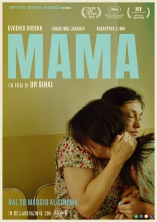

Mama
From the festival
After many years as a live-in housekeeper in Israel, Mila is forced to leave the elegant seaside home she’s cared for—and the serene life she’s built there—to return to her family in a remote Polish village. The long-awaited reunion isn’t what she imagined: Faces have changed; distance has grown. And Mila, portrayed with breathtaking restraint by Evgenia Dodina, must confront what’s been lost—and who she’s become. Inspired by the real lives of migrant women, Or Sinai’s first narrative feature brings nuanced attention to the unseen. Mila is complex, full of longing, strength, humor, and contradiction. Shot with intimacy and grace, Mama explores belonging, memory, and the quiet ache of dislocation. It’s a story that is both grounded and gently political, with moments that speak volumes without a word. It’s a quiet but powerful film that lingers with you long after it’s ended. Sinai is a strong new voice in Israeli cinema. —João Federici
Source: Festival website programme (MVFF48): Wayback Machine copy; Festival film page: Wayback Machine copy; Poster from MYmovies.it